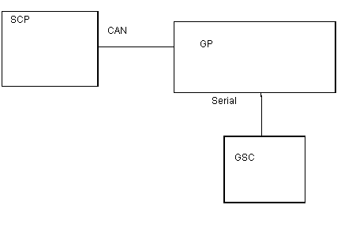

Proprietary to General Electric Company
Direction 5440000, Rev# 5
Signa HDxt Service Methods
Module Version 1.0, Version Date 4/26/07
Proprietary to General Electric Company |
Diagnostics >> Peripherals >> Gradient Diagnostics
This diagnostic verifies that the GP can communicate with the GSC. The GP and GSC are connected by a nine-pin serial cable. This serial connection is exercised.
Serial cable between GP and GSC
This test can only be run on TwinRoom systems. Only TRM systems are equipped with a Gradient Switch Controller. In a TRM system, the GSC acts like 6 pole - double throw switch to connect GP to either the Whole Body gradient coils or the Zoom gradient coils.
Illustration 1: Gradient GSC Relay Functional Block Diagram

| NOTE: | The Test Options settings should not be changed from their default settings unless instructed to do so by a GE Healthcare engineer. There are very few circumstances when these settings ever need to be changed. |
Output values are judged pass or fail. In the event of failure, the details of the failure can be found in the GE System Log.
Although, in the case of errors you can click the 1st Error number to see the nature of the error, it is recommended that you view the GE System Log to view all the errors that were recorded.
Click [Calculate Time] to get an estimate of the time it will take to run the selected diagnostics.
None